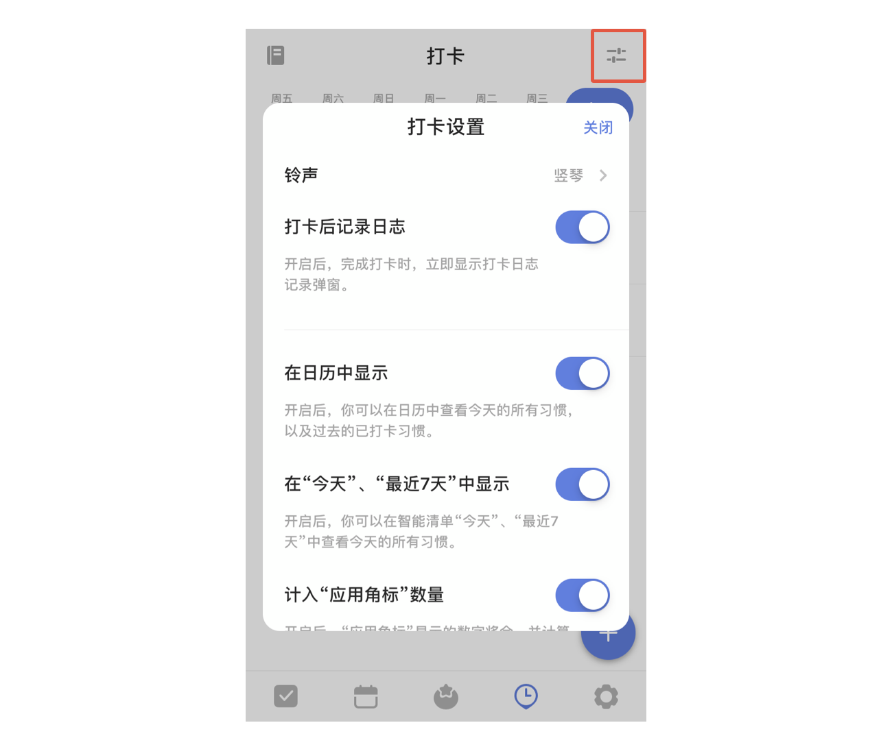

添加打卡
开启/关闭
进入「设置」-「选项卡」- 打开「打卡」，主界面底部 TAB 栏将会出现打卡选项（打卡默认关闭）。
添加习惯
在习惯界面点击「+」键，弹出习惯库，在习惯库中选择想要创建的习惯，或者另行创建自定义习惯。
注：普通账户最多只可设置 3 个习惯，高级账户无限制。
编辑习惯
将习惯向左滑即可编辑习惯，修改习惯名称、图标、鼓励语。 还可以设置习惯打卡的频率（按天或者按周计算）和提醒时间（可以添加多个提醒）。 同时也可以设定自己的习惯目标，比如一天阅读五页书籍
打卡归档
可以将暂时不需要打卡的习惯进行归档。
点进该习惯主界面，点击右上角的「···」，选择「归档」即可。
注：如果选择「删除」，那么该习惯的所有打卡数据都将删除，且无法恢复。
另外，可以点击打卡主界面左上角的图标，查看「已归档」的习惯，左滑该归档习惯可以选择恢复打卡 或者删除习惯。
打卡统计
可以点击习惯，在打卡动画界面中上滑，即可呼出该习惯的打卡统计。
注：今天之前的日期都可以进行补打卡操作。
习惯显示 & 打卡日志
点击打卡主界面右上角的图标，可以设置打卡的铃声，是否显示打卡日志以及选择是否在日历和智能清单“今天”、“最近7天”中显示。
